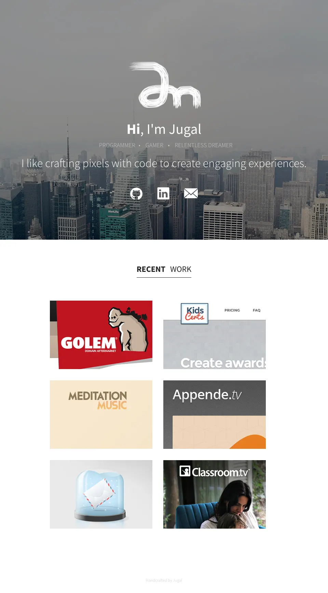

Making
Archive
-
Classroom.tv
Web & Logo
× 
Classroom.tv · logo 
Classroom.tv · homepage -
Unlistr
Web & Illustration
× 
Unlistr · illustration 
Unlistr · landing page -
Meditation Music
Web & Illustration
× 
Meditation Music · player 
Meditation Music · second screen -
KidsCerts
Web & Logo
× 
KidsCerts · certificates for kids · landing page and logo -
Aprende.tv
Web & Illustration
× 
Aprende.tv · online courses · homepage and illustrations -
Golem
Web
× 
Golem · domain aftermarket · homepage -
jugalm.com
Web & Identity
× 
jugalm.com · 2013 · the site this one replaced — and where the mark comes from. It is still standing.